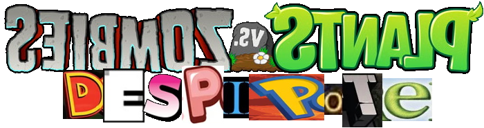
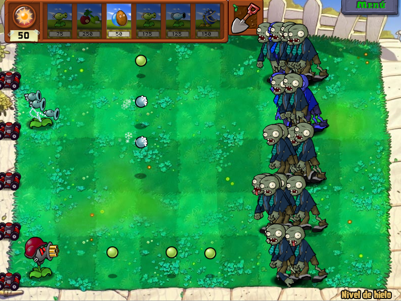
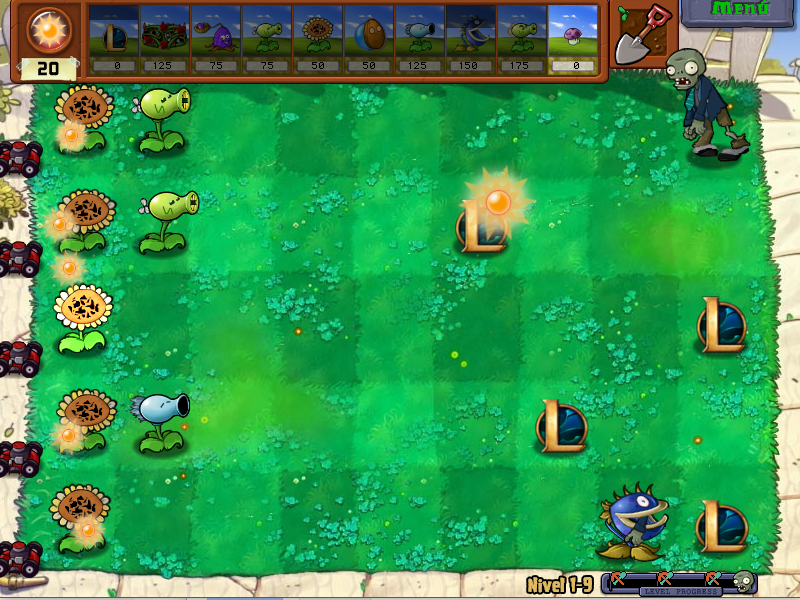
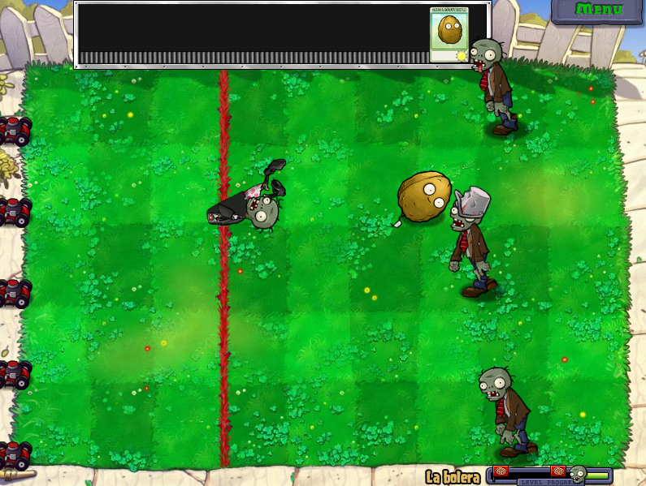

Aquí está...

|
¡Mi mod de Plants Vs. Zombies! |
|---|
|
Aquí es donde mostraría el trailer cutre que hice en su momento, pero YouTube no me deja poner el video aquí, así que lo tendré que poner así. |
|
Durante 2023 empecé a hacer este mod, con el fin de probar qué se podría modificar en el juego con todo lo que había hecho la comunidad de modding del juego y a su vez darle un estilo cutrón, como los mods de 2012. La versión que terminé publicando aún está incompleta y con varios errores; pero debido a mi pérdida de interés en el proyecto, más lo frustrante que sería el proceso de arreglar algunos errores, el proyecto está abandonado hasta nuevo aviso. Aquí está la página de gamejolt del mod. En un principio podría haber hecho que la página principal te llevara a la del mod en gamejolt, pero al final he decidido hacerle una sección de esta página para mostrar algo. En un blog que llegué a hacer como parte de un trabajo de clase llegué a hacer varias entradas mientras desarrollaba el mod. No llegué a cubrir todo el desarrollo, peró llegué a hacer unas 5 entradas. |
 9/03/2023 - Una pequeña introducción 9/03/2023 - Una pequeña introducción |
9/03/2023 - Los primeros cambios | 10/03/2023 - El cosmos en tu jardín |
|---|
 10/03/2023 - Zombis viejos, trucos nuevos 10/03/2023 - Zombis viejos, trucos nuevos |
12/03/2023 - Plantas de balance dudoso |
|---|